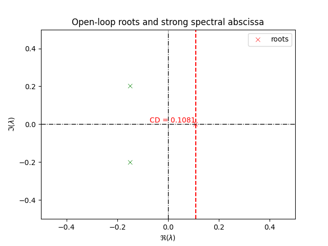
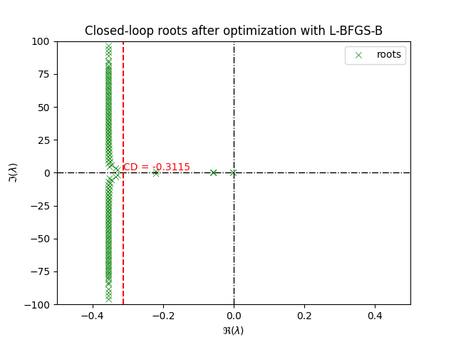
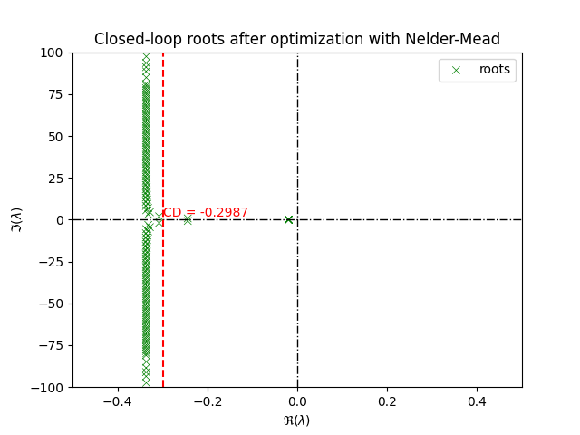

Note
Go to the end to download the full example code.
Example - strong stabilization#
We consider the system described by the following delay-differential equation from [Michiels and Niculescu, 2007] and Example 3.2 of [Appeltans and Michiels, 2023]
with
The goal is to compute the controller parameters K such that the closed-loop system is strongly stable.
We shall follow the following steps for designing our stabilizing controller:
Create the open-loop system as a
DDAEobjectCreate the controller as a
DDAEobject and form the closed-loopOptimize the controller parameters using
controller_bfgsto minimize the spectral abscissa of the closed-loop system.
import numpy as np
import matplotlib.pyplot as plt
import tdcpy
from tdcpy import DDAE
import tdcpy.plot
Step 1: Create the open-loop DDAE
A0 = np.array([
[ -0.08, -0.03, 0.2 ],
[ 0.2, -0.04, -0.005 ],
[ -0.06, 0.2, -0.07 ],
])
Bu = np.array([
[-0.1],
[-0.2],
[ 0.1],
])
C = np.array(np.eye(3)) # all states as outputs
D1 = np.array([
[3],
[4],
[1],
])
D2 = np.array([[0.4], [-0.4], [-0.4]])
hD = np.array([2.5,5.])
plant = tdcpy.DDAE(
A=[A0], hA=[0],
B=[Bu], hB=[5.],
C=[C], hC=[0],
D=[D1, D2], hD=[2.5, 5],
)
print(plant)
<tdcpy.ddae.DDAE object at 0x7f58ddd69490>
Let us examine the open-loop system, is the system stable?
Spectral abscissa of open-loop: 0.10805932731871844
Since the spectral abscissa is positive => the system is unstable. Let us try to stabilize it by static output feedback.
Step 2: Create the controller as a DDAE object and form the closed-loop
from tdcpy.common.closed_loop import controller_reprezentation
from tdcpy import ClosedLoop
E, K, hK = controller_reprezentation(order=0, n_inputs=3, n_outputs=1, hD=np.array([0.]))
cl = ClosedLoop(plant, order=0, y_indices=[0,1,2], u_indices=[0], K0=np.zeros_like(K), hK=hK)
/home/runner/work/tdcpy/tdcpy/src/tdcpy/common/closed_loop.py:67: SyntaxWarning: invalid escape sequence '\s'
E x' = \sum_{k=0}^{hK} K_k x(t - hK_k)
Let us first check if the closed-loop is retarded or neutral
Is the closed-loop system retarded? False
As the closed-loop is neutral, the controller will have to be designed for strong stability.
from tdcpy import strong_spectral_abscissa
ssa = strong_spectral_abscissa(cl_ddae, r=-1)
print(f"Strong spectral abscissa before optimization is: {ssa}")
region = [-0.5, 0.5, -0.5, 0.5]
cr_system, _ = tdcpy.roots(cl_ddae, r=region, discretization=100)
import matplotlib.pyplot as plt
import tdcpy.plot
fig, ax = plt.subplots()
tdcpy.plot.eigen_plot(cr_system, ax=ax)
ax.axvline(x=ssa, color="red", linestyle="--")
ax.text(ssa, 0, f"CD = {ssa:.4f}", color="red", fontsize=10,
verticalalignment="bottom", horizontalalignment="right")
ax.legend()
ax.title = ax.set_title("Open-loop roots and strong spectral abscissa")
ax.set_xlim(region[0], region[1])
ax.set_ylim(region[2], region[3])
plt.show()

Strong spectral abscissa before optimization is: 0.10805932731871942
Step 3: Mimimizing the strong spectral abscissa of the closed-loop
To this end, the high-level function minimize_spectral_abscissa provides an interface for minimizing the
strong spectral abscissa of the closed-loop system
from function utilizes the minimize function from the scipy.optimize module. The default
is the “L-BFGS-B” method.
from tdcpy.stabopt.controller_bfgs import design_bfgs, minimize_spectral_abscissa
options={'ftol': 1e-6, 'gtol': 1e-6}
sol = minimize_spectral_abscissa(plant, order=0, method="L-BFGS-B", options={"disp": True, **options}, callback=None, type = "barrier")
x = sol.x
K = x.reshape(K.shape)
# update the closed-loop with the optimized controller parameters
cl = tdcpy.ClosedLoop(plant, order=0, y_indices=[0,1,2], u_indices=[0], K0=K, hK=hK)
cl_ddae = DDAE(E=cl.E,A=cl.A,hA=cl.hA) # extracting the closed-loop ddae
cd, cdInfo = tdcpy.spectral_abscissa_diff(cl_ddae, return_info=True)
ssa_cl = strong_spectral_abscissa(cl_ddae, r=-1)
print(f"Optimized cd = {cd}")
print(f"Strong spectral abscissa of closed-loop with L-BFGS-B = {ssa_cl}")
/home/runner/work/tdcpy/tdcpy/src/tdcpy/stabopt/controller_bfgs.py:511: SyntaxWarning: invalid escape sequence '\d'
E \dot{x}(t) = (P_0 + B K_0 C) x(t) + \sum_{i=1}^{m} (P_i + B K_i C) x(t - \tau_i)
/home/runner/work/tdcpy/tdcpy/src/tdcpy/stabopt/gradients.py:209: SyntaxWarning: invalid escape sequence '\g'
Computes the gradient of the function :math:`\gamma_0(p)` of the delay-difference
Optimized cd = -0.31150856756438117
Strong spectral abscissa of closed-loop with L-BFGS-B = -0.001118911790941013
Plotting the roots of the closed-loop system after optimization with L-BFGS-B
region = [-0.5, 0.5, -100, 100]
cr_cl, cr_info = tdcpy.roots(cl_ddae, r=-1, discretization=200)
fig, ax = plt.subplots()
tdcpy.plot.eigen_plot(cr_cl, ax=ax)
ax.axvline(x=cd, color="red", linestyle="--")
ax.text(cd, 0, f"CD = {cd:.4f}", color="red", fontsize=10,
verticalalignment="bottom", horizontalalignment="left")
ax.legend()
title = ax.set_title("Closed-loop roots after optimization with L-BFGS-B")
ax.set_xlim(region[0], region[1])
ax.set_ylim(region[2], region[3])
plt.show()

Although the spectral abscissa is minimized successfully, we can achieve better Due to the non-smoothness of the strong spectral abscissa, the L-BFGS-B solver can get stuck in a local minima. In order to achieve better results, we can try a different solver for example Nelder-Mead, which is a derivative-free solver and repeat the process
sol = minimize_spectral_abscissa(plant, order=0, method="Nelder-Mead", options={"disp": True, **options}, callback=None, type = "barrier")
x = sol.x
K = x.reshape(K.shape)
# update the closed-loop with the optimized controller parameters
cl = tdcpy.ClosedLoop(plant, order=0, y_indices=[0,1,2], u_indices=[0], K0=K, hK=hK)
cl_ddae = DDAE(E=cl.E,A=cl.A,hA=cl.hA) # extracting the closed-loop ddae
# let us again compute the strong spectral abscissa of the closed-loop
cd, cdInfo = tdcpy.spectral_abscissa_diff(cl_ddae, return_info=True)
ssa_cl = strong_spectral_abscissa(cl_ddae, r=-1)
print(f"Optimized cd with Nelder-Mead = {cd}")
print(f"Strong spectral abscissa of closed-loop with Nelder-Mead = {ssa_cl}")
/home/runner/work/tdcpy/tdcpy/src/tdcpy/stabopt/controller_bfgs.py:419: RuntimeWarning: Method Nelder-Mead does not use gradient information (jac).
sol = optimize.minimize(
/home/runner/work/tdcpy/tdcpy/src/tdcpy/stabopt/controller_bfgs.py:419: OptimizeWarning: Unknown solver options: ftol, gtol
sol = optimize.minimize(
Optimization terminated successfully.
Current function value: -0.000169
Iterations: 88
Function evaluations: 166
Optimization terminated successfully.
Current function value: -0.017881
Iterations: 190
Function evaluations: 337
Optimization terminated successfully.
Current function value: -0.018876
Iterations: 59
Function evaluations: 114
Optimization terminated successfully.
Current function value: -0.019175
Iterations: 59
Function evaluations: 114
Optimization terminated successfully.
Current function value: -0.019265
Iterations: 59
Function evaluations: 114
Optimization terminated successfully.
Current function value: -0.019292
Iterations: 59
Function evaluations: 114
Optimization terminated successfully.
Current function value: -0.019300
Iterations: 59
Function evaluations: 114
Optimization terminated successfully.
Current function value: -0.019302
Iterations: 59
Function evaluations: 114
Optimization terminated successfully.
Current function value: -0.019303
Iterations: 59
Function evaluations: 114
Optimization terminated successfully.
Current function value: -0.019303
Iterations: 59
Function evaluations: 114
Optimized cd with Nelder-Mead = -0.298702954648969
Strong spectral abscissa of closed-loop with Nelder-Mead = -0.019303070354182772
Plotting the roots of the closed-loop system after optimization with Nelder-Mead
cr_cl, _ = tdcpy.roots(cl_ddae, r=-1, discretization=200)
fig, ax = plt.subplots()
tdcpy.plot.eigen_plot(cr_cl, ax=ax)
title = ax.set_title("Closed-loop roots after optimization with Nelder-Mead")
ax.set_xlim(region[0], region[1])
ax.set_ylim(region[2], region[3])
ax.axvline(x=cd, color="red", linestyle="--")
ax.text(cd, 0, f"CD = {cd:.4f}", color="red", fontsize=10,
verticalalignment="bottom", horizontalalignment="left")
ax.legend()
plt.show()

Total running time of the script: (3 minutes 18.918 seconds)